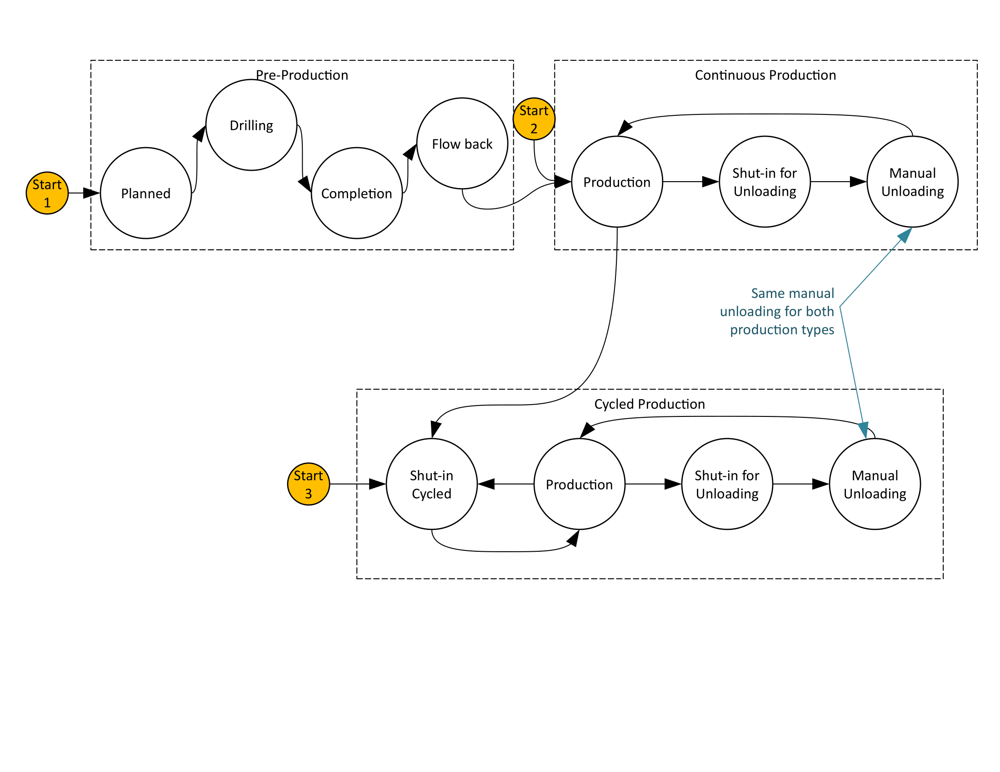

Wellhead with constant production
Model Filename: Well.json
Continuously producing wells
States
- PLANNED
Planning stages for wellhead
- DRILLING
Drilling specific wellhead
- COMPLETION
Well drilling is completed
- FLOW_BACK
Well is in flowback stages
- PRODUCTION
Well is in steady production
- MANUAL_UNLOADING
Manual unloading for wells
- AUTOMATIC_UNLOADING
Automatic unloading for wells
- LU_SHUT_IN
Shut in for unloading

Fluid Flows
- Condensate
Primary Condensate flow
- Water
Primary Water flow
Site Definition Columns
- Facility ID
Facility of the equipment
- Unit ID
Identity of the equipment
- Latitude
Latitude of the physical location of the facility / wellpad
- Longitude
Longitide of the physical location of the facility / wellpad
- Oil Production
Rate of oil production per day from a well
Units: bbl/day
- Water Production
Rate of water produced per day from a well
- Di per month
Parameter for decline curve (not yet implemented)
- b Hyperbolic
Parameter for decline curve (not yet implemented)
- Age months
Parameter for decline curve (not yet implemented)
- Completion Durations Name
A curated data file that specifies the distribution of well completion durations
- Optional Unloading
A Boolean variable [True/False] that specifies if we want to simulate well-unloading. Defaulted to False. Setting this parameter to False will nullify all the unloading parameters, i.e. ‘Min Time Between Unloadings’, ‘Max Time Between Unloadings’, ‘Unloading Type’, ‘Weekdays Only’, ‘LU Shut-In Duration Mim’, ‘LU Shut-In Duration Max’, ‘Unloading Duration Min’, ‘Unloading Duration Max’ and ‘Destination of Unloading Gas’.
Units: True/False
- Approx Delay After Completion
Approximated buffer time after well completion in days. The simulation will pick a random value uniformly distributed within a 20% window around the time specified.
Units: days
- Min Time Between Unloadings
Minimum time in days between unloadings.
Units: days
- Max Time Between Unloadings
Maximum time in days between unloadings. The simulation will pick a uniformly distributed random value between min and max.
- Unloading Type
Specifies whether the unloadings are automatic or manual. This parameter should only be specified if ‘Optional Unloading’ is ‘True’. The parameter is defaulted to ‘Manual’ when we chose not to specify.
Units: Automatic/Manual
- Weekdays Only
Specifies whether the unloadings are happening on weekends or weekdays. True for weekdays only, False for weekends
Units: True/False
- LU Shut-In Duration Min
Minimum liquid-unloading shut in duration in hours
Units: hours
- LU Shut-In Duration Max
Maximum liquid-unloading shut in duration in hours
Units: hours
- Unloading Duration Min
Minimum unloading duration in hours
Units: hours
- Unloading Duration Max
Maximum unloading duration in hours
Units: hours
- Destination of Unloading Gas
Destination (unitID) of gas that is released during unloading (not implemented)
- Approx Planning Time
Approximate duration for planning
Units: days
- Approx Delay After Planning
Approximate duration of the buffer time after planning and before drilling
Units: days
- Approx Drilling Time
Approximate duration for drilling
Units: days
- Approx Delay After Drilling
Approximate duration of the buffer between drilling and flow-back stage
Units: days
- Approx Flow Back Time
Approximate Flow back duration
Units: days
- Approx Delay After Flow Back
Approximate buffer time after flowback and before production starts.
Units: days
- Simulation Start Stage
Specifies the initial state of the simulation. Default value is Production. Setting this parameter to Production will keep the simulation in the production stage for all of simulation duration. We do not need to specify the preproduction columns (‘Completion Durations Name’, ‘Approx Delay After Completion [days]’, ‘Approx Planning Time [days]’, ‘Approx Delay After Planning [days]’, ‘Approx Delay After Planning [days]’, ‘Approx Delay After Planning [days]’, ‘Approx Delay After Drilling [days]’, ‘Approx Flow Back Time [days]’, ‘Approx Delay After Flow Back [days]’) in this case. Setting it to PreProduction, the simulation will start at Planning state and follow from there. All the approx. values are uniform random variables with a +- 20% window from the specified time
Units: PreProduction, Production
- Flow Tag
Specifies an identity to match it with the correct gas composition in the gas composition file
- Flow Gas Composition
The gas compositions file associated with the well
Emitters
- Completion
Emitter Category: COMPLETION
Emission Category: VENTED
Model Parameters:
- Factor Tag
A parameter to identify a set of activity and emission factors in Factors.csv file
- Leak GC Name
Gas composition pointer for leaks based on pLeak, MTTR, MTBF
- Wellhead Component Leak
Emitter Category: COMPONENT LEAK
Emission Category: FUGITIVE
Model Parameters:
- Component Leak Survey Frequency
Frequency of leak surveys (ex. LDAR)
Units: days
- Component Count
Component counts of all the equipment that can leak
- Component pLeak
Probability of leak of the number of components leaking at any time
- Factor Tag
A parameter to identify a set of activity and emission factors in Factors.csv file
- Leak GC Name
Gas composition pointer for leaks based on pLeak, MTTR, MTBF
- Wellhead Pneumatic Emissions
Emitter Category: PNEUMATIC EMISSION
Emission Category: VENTED
Model Parameters:
- Leak GC Name
Gas composition pointer for leaks based on pLeak, MTTR, MTBF
- Factor Tag
A parameter to identify a set of activity and emission factors in Factors.csv file
- Actuator Type
Actuator type of pneumatics on the facility
Units: Gas, Air, Electric
Continuous Production Wells Reference
Continuous production wells will be producing most of the time except for pre-production and unloadings see Consolidated well model